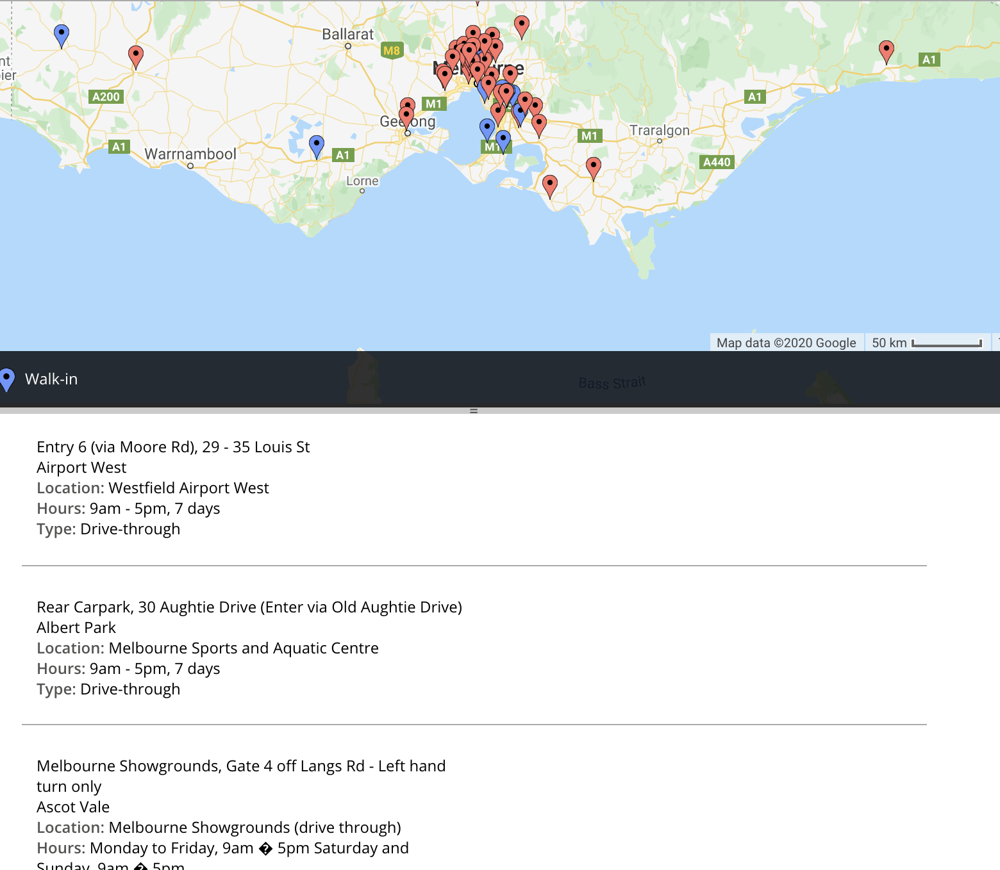

Description
This part is an additional feature of the interactive map, allowing users to find the location of the covid-19 test in Victoria.
Regarding location and working hours data, we grabbed them from the official Victoria website. Regarding the production method, first download the data to the local directory, then use Microsoft excel to organize and export the csv format, then use a third-party software ( batchgeo) to generate a map, and finally embed the generated map link into mvf1
When the user uses this function, if the user wants to find the test location closest to them, they only need to find the test location closest to them through the map, and then click the mark in the map. After that, detailed information about the place, such as address and business hours, will be displayed above the marker on the map.
User stories
If I feel unwell, I can open the map and select the test location closest to me
If I am a person preparing to go abroad, I need to find a test site for covid-19 testing
Testing Facility Location
This is our extended function design. The basic operation mode is similar to mvf1 interactive map.We grabbed information about the test location and business hours from the official Victoria website.We organize these data into csv files and then import them to third-party websites to generate charts. We also add text descriptions below the charts to facilitate users to observe the data more intuitively
Validation
The verification method of the map is: whether the map can be opened and run normally, whether it can be viewed according to the information, whether it is possible to switch the display data and display the type by color, so that if an error occurs, the verification fails